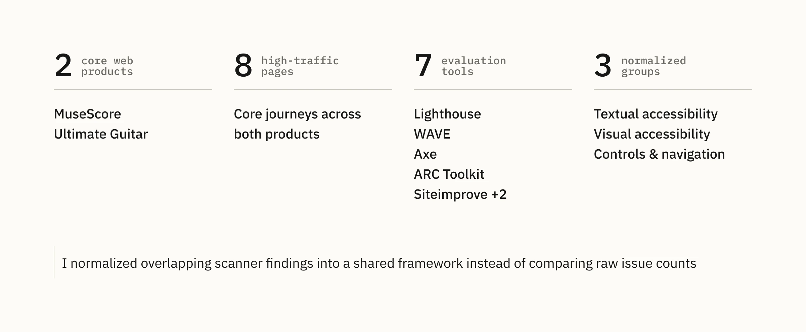
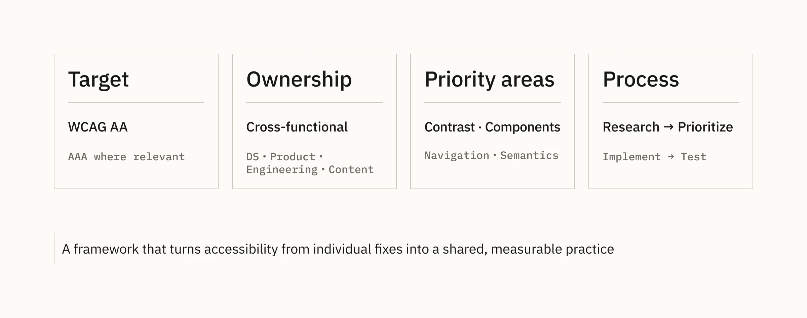
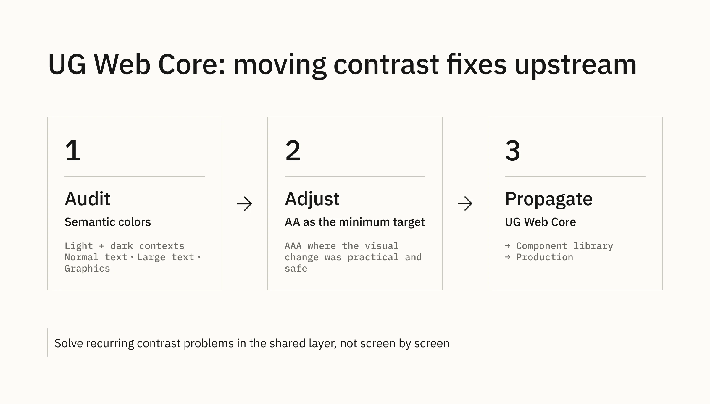
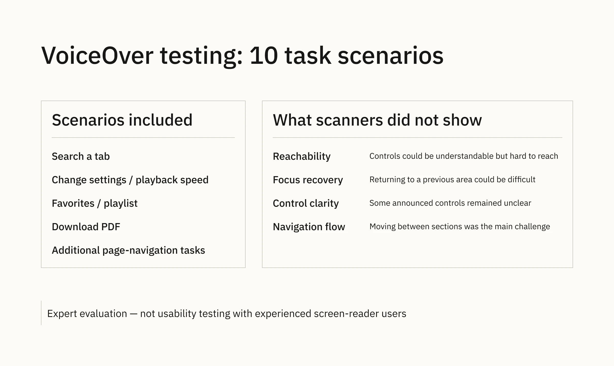
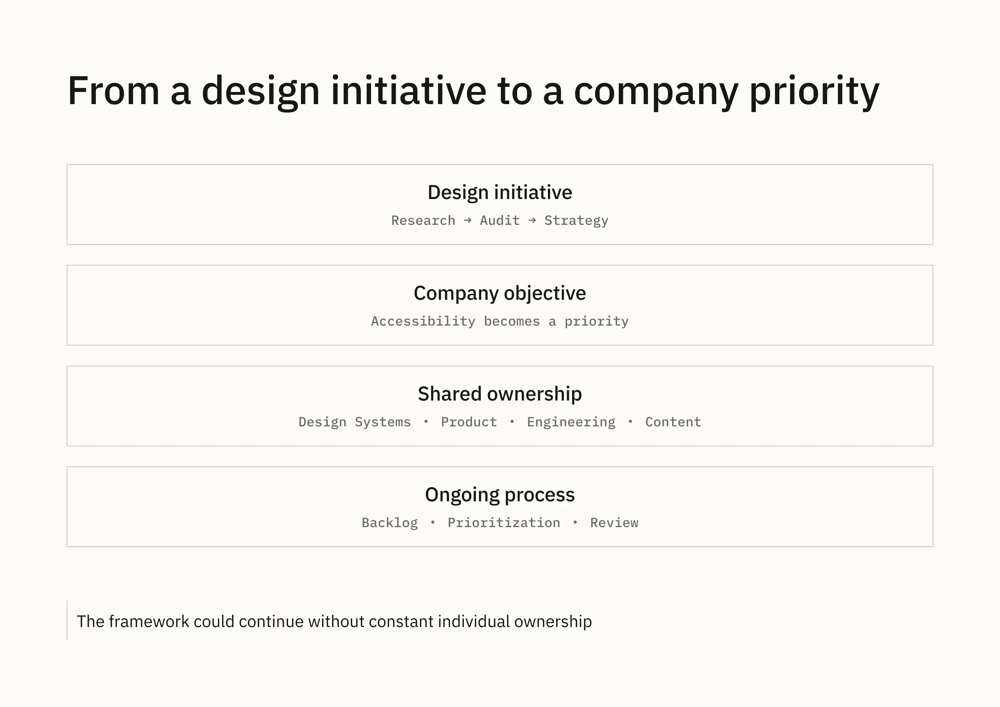
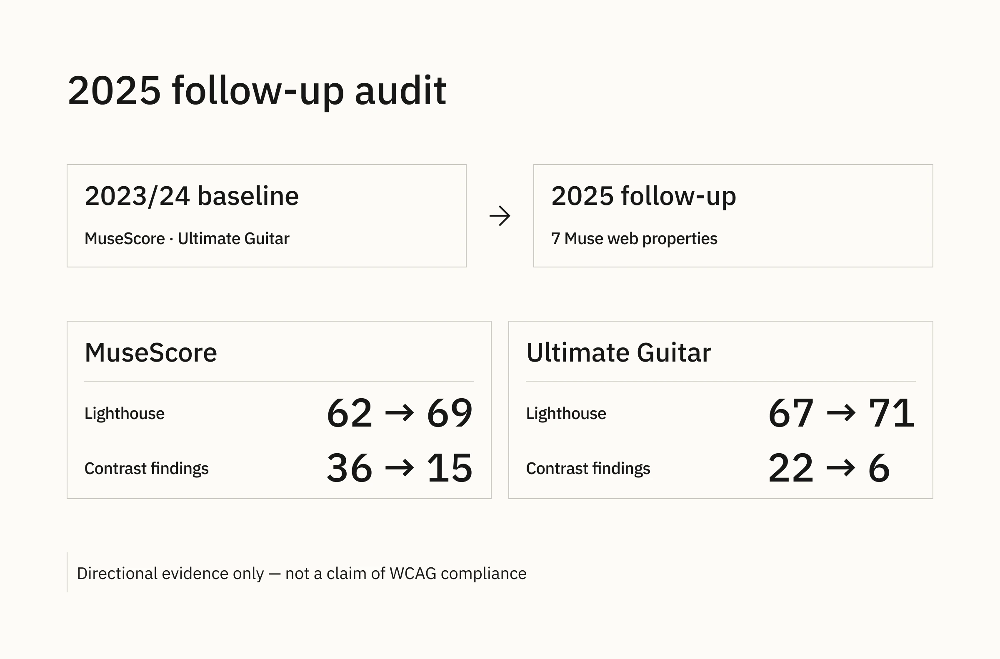

Muse · Accessibility · Design systems
Building Accessibility into Muse Design Systems
I helped turn accessibility from a fragmented product concern into a repeatable framework for auditing products, defining ownership, and embedding requirements into the Design System.
Case thesis
How I helped turn accessibility from a fragmented product concern into a repeatable framework for auditing products, defining ownership, and embedding accessibility requirements into the Design System.
The work began before accessibility became a company priority and grew from baseline audits into strategy, system changes, manual assistive-technology testing, and follow-up evaluation.
At a glance
- Role: Design Systems Designer
- Timeline: 2023–2025
- Scope: research, audits, strategy, Design System foundations, manual testing
- Products: MuseScore, Ultimate Guitar, Audio.com, and selected Muse web properties
- Baseline: 2 core products · 8 high-traffic pages · 7 evaluation tools · 3 normalized issue groups
01 — Accessibility existed as a concern, but not as a system
When I started, there was no shared view of how accessible the key products were, which standards mattered most, or who should own different classes of issues.
I first needed a baseline: not just a count of errors, but a picture of which accessibility problems repeated across products.
02 — Establishing a baseline
I audited eight high-traffic pages across MuseScore and Ultimate Guitar using seven accessibility tools from the W3C evaluation tools directory: Lighthouse, WAVE, ARC Toolkit, Siteimprove, IBM Equal Access, Accessible Web, and Axe.
The tools used different terminology and scoring, so their raw counts were not directly comparable. I mapped overlapping findings into three shared groups: Textual accessibility, Visual accessibility, and Controls & navigation.
This made the results usable across products. Visual accessibility consistently emerged as the main shared problem area, while Ultimate Guitar also showed notable issues around controls and navigation.

03 — Turning findings into a strategy
The audit identified problems, but not how the organization should act on them. I turned the research into an accessibility strategy with WCAG AA as the primary target and relevant AAA criteria as a longer-term direction where practical.
The strategy defined four operational areas:
- Target: what level we were aiming for
- Ownership: Design Systems, Product, Engineering, and Content responsibilities
- Priority areas: contrast, components, navigation, semantics, and related product issues
- Process: research → prioritize → implement → test
I proposed two parallel tracks: fix issues in existing interfaces while embedding accessibility requirements into cores and component libraries to prevent the same classes of problems from reappearing.

04 — Embedding accessibility into the Design System
Contrast was one of the most persistent findings. Rather than fixing it repeatedly screen by screen, I moved part of the solution into the Ultimate Guitar Web Core.
I audited semantic colors across their actual light/dark contexts and use cases for normal text, large text, and graphics. I adjusted failing combinations toward AA as the minimum target, using AAA where the visual change was practical. The updated values were implemented in Web Core, then propagated through the component library and into production.

05 — Testing beyond automated tools
Automated checks could identify standards violations, but not how difficult a real task might be with assistive technology. I therefore ran a manual VoiceOver evaluation of the redesigned Ultimate Guitar Tab page across ten task scenarios.
The recurring problems were about reachability, focus recovery, control clarity, and navigation flow. Some controls were understandable once focused but difficult to reach or leave, and moving between sections was often harder than interacting with an individual control.
This was an expert evaluation, not usability testing with experienced screen-reader users. I recommended validating the findings further with people who rely on assistive technologies in everyday use.

06 — From a design initiative to a company priority
When I first presented the strategy, accessibility was accepted as a direction but was not yet urgent. That changed when the European Accessibility Act became a practical regulatory and business concern.
By then, the baseline, target levels, ownership model, design/frontend requirements, prioritization principles, and testing approach already existed. Accessibility became a company-level objective, responsibilities were assigned, and an implementation backlog was created using the research as a foundation.
Ownership then expanded beyond the Design System. Product and Engineering planned the technical implementation themselves while I continued reviewing contrast, foundations, component libraries, and design work. The initiative no longer depended on my constant involvement.

07 — Follow-up audit
In 2025, I repeated the audit and expanded it to seven Muse web properties, including MuseScore, Ultimate Guitar, Audio.com, Sheet Music Plus, Sheet Music Direct, Audacityteam.org, and Musescore.org.
For MuseScore and Ultimate Guitar I preserved comparisons with the earlier checks. The figures are useful as directional evidence, not as proof of WCAG compliance or as outcomes attributable solely to my work. The follow-up also surfaced newer categories such as touch-target sizing, ARIA, list structure, captions, and landmarks.

08 — From an audit to a repeatable practice
The main outcome was not a single score or a claim of full WCAG compliance. It was a change in how accessibility could be approached.
- Measurable baseline: key products could be assessed and revisited over time.
- Shared target and ownership: WCAG direction and responsibilities were made explicit across functions.
- System-level prevention: accessibility requirements increasingly moved into foundations and component work instead of being handled only screen by screen.
- Broader validation: automated scans were complemented by manual VoiceOver testing.
- Sustainable process: Product and Engineering could continue implementation using the research and framework without constant individual ownership.
Accessibility had become something the organization could repeatedly evaluate, discuss, and improve as a system.